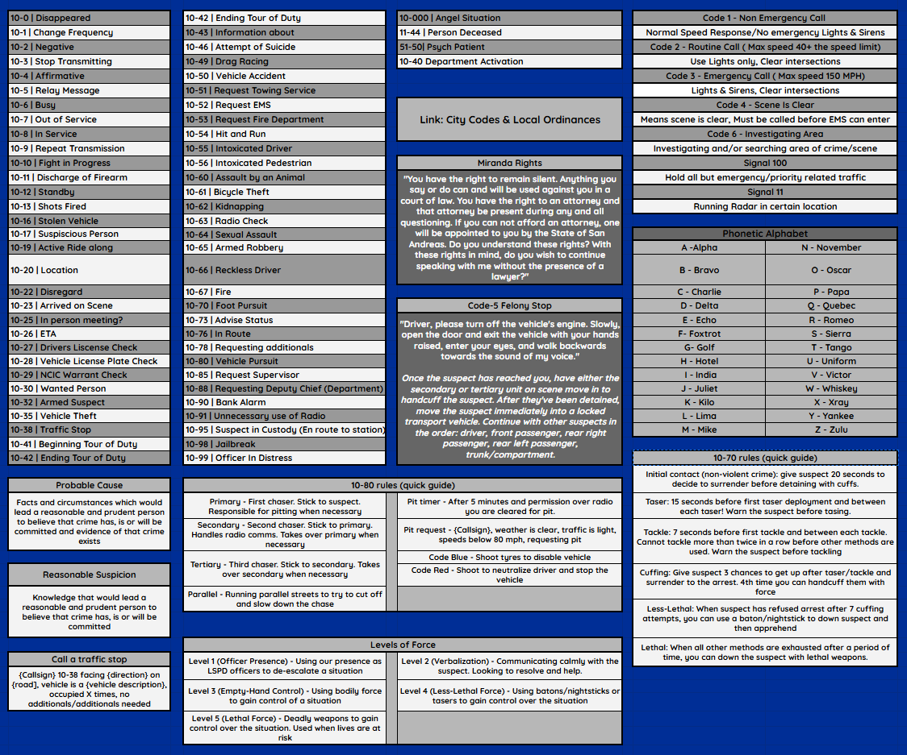

Overview
Phase I introduces cadets to department structure, expectations,
professionalism, and basic law enforcement responsibilities.
This phase is completed in the academy classroom after uniforms
are issued. The primary focus is the cadet reference sheet and
radio communication.
Cadet Reference Sheet
In this section, post the vLife PD Roster Sheet in
#awaiting-academy. Have everyone open it and navigate
to the Cadet Reference Sheet section. Go through each topic listed
below and explain them. Let cadets know this sheet should be their
first reference before asking questions.
- Basic commonly used 10-codes
- Miranda Rights
- Code 5 Felony Stop
- 10-80 rules
- 10-70 rules
- Probable Cause
- Reasonable Suspicion
- Calling a traffic stop

Callsigns & Log
This portion is very simple. Have everyone go to
#awaiting-academy and post their first and last name.
Then go to #academy-log, copy the log template, and fill
it out for each cadet. Check the previous log to determine the next
available callsign—those will be their assigned callsigns.
Once completed, issue each cadet a radio on the way to the garage
and have them join radio channel #85. Walk them through
enabling the radio overlay and updating their radio name with their
rank and callsign.